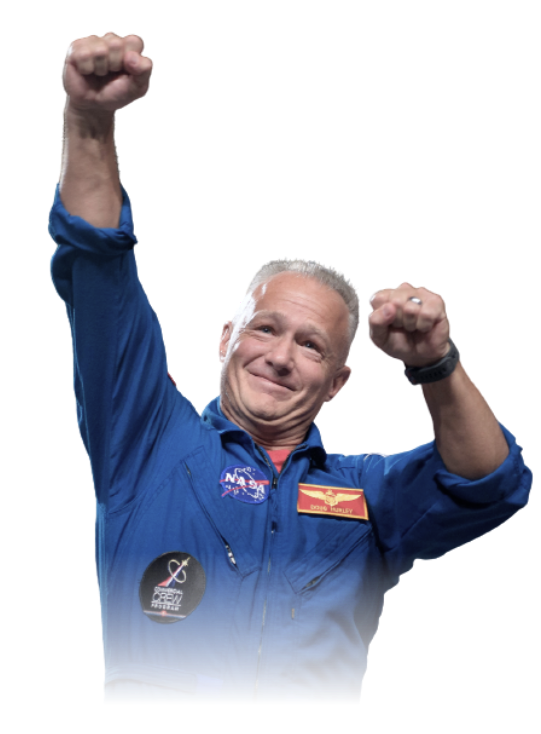
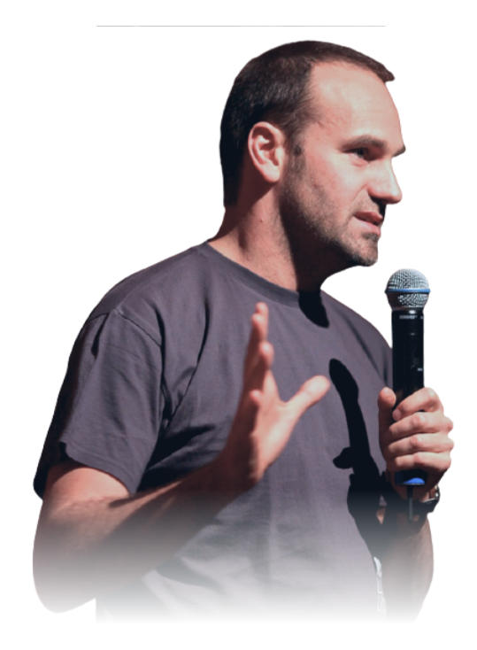
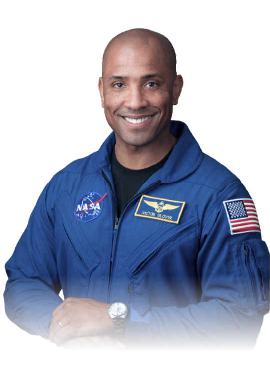

Meet your crew
Commander
Douglas Hurley
Douglas Gerald Hurley is an American engineer, former Marine Corps pilot and former NASA astronaut. He launched into space for the third time as commander of Crew Dragon Demo-2.

Mission Specialist
MARK SHUTTLEWORTH
Mark Richard Shuttleworth is the founder and CEO of Canonical, the company behind the Linux-based Ubuntu operating system. Shuttleworth became the first South African to travel to space as a space tourist.

Pilot
Victor Glover
Pilot on the first operational flight of the SpaceX Crew Dragon to the International Space Station. Glover is a commander in the U.S. Navy where he pilots an F/A-18.He was a crew member of Expedition 64, and served as a station systems flight engineer.

Flight Engineer
Anousheh Ansari
Anousheh Ansari is an Iranian American engineer and co-founder of Prodea Systems. Ansari was the fourth self-funded space tourist, the first self-funded woman to fly to the ISS, and the first Iranian in space.